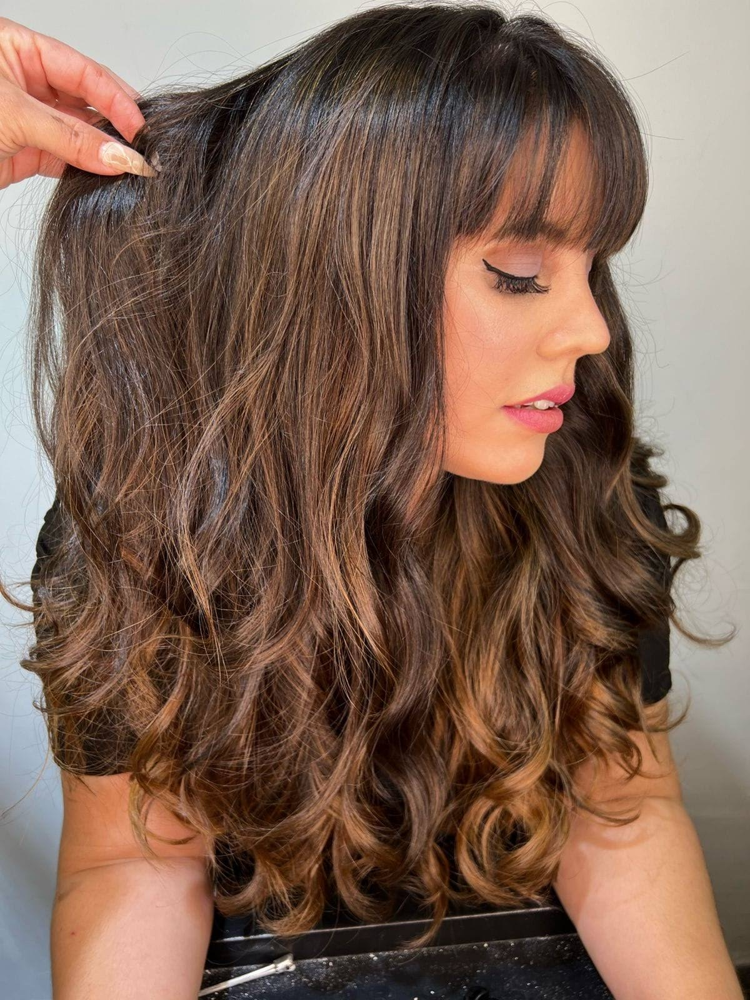
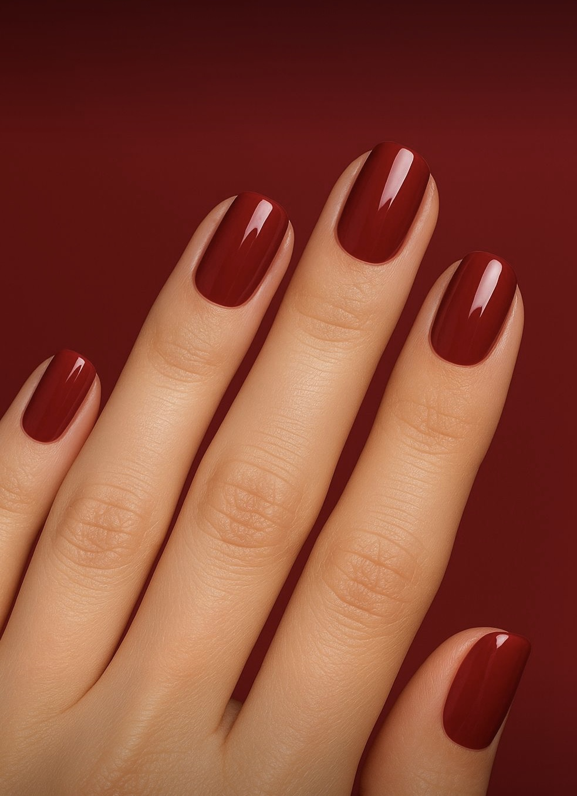
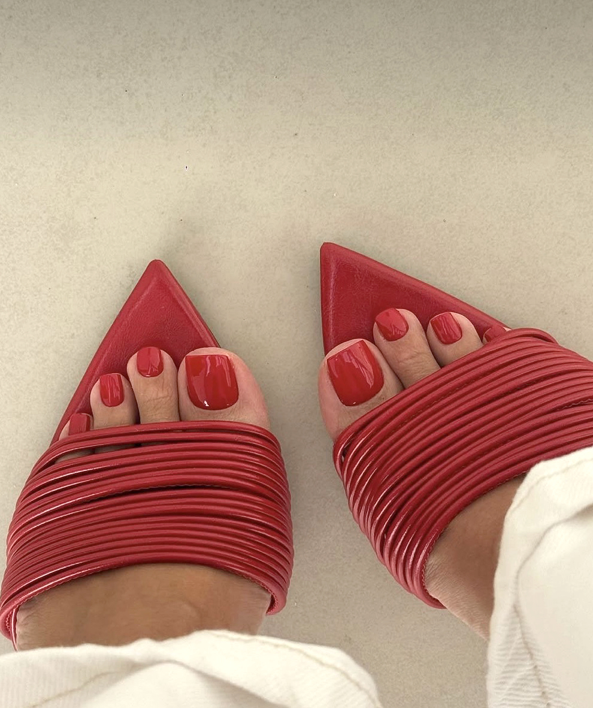
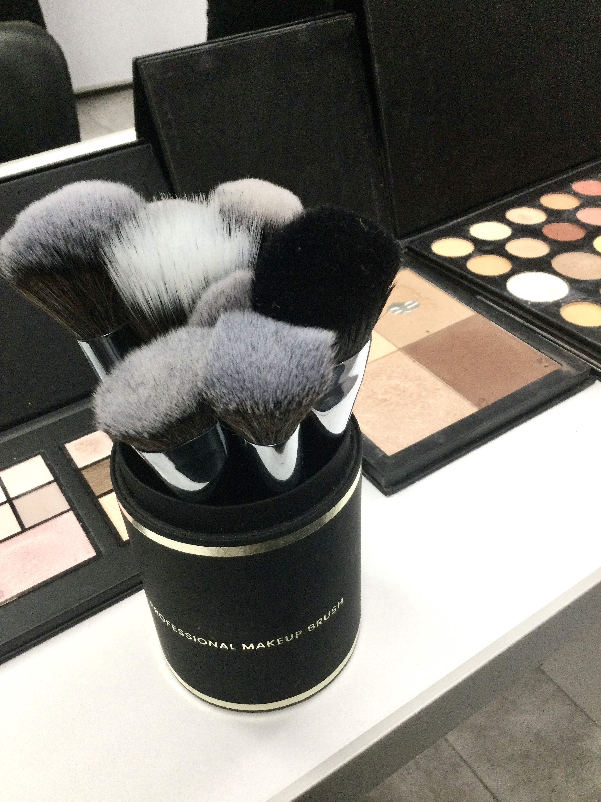
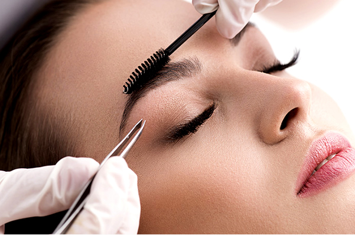
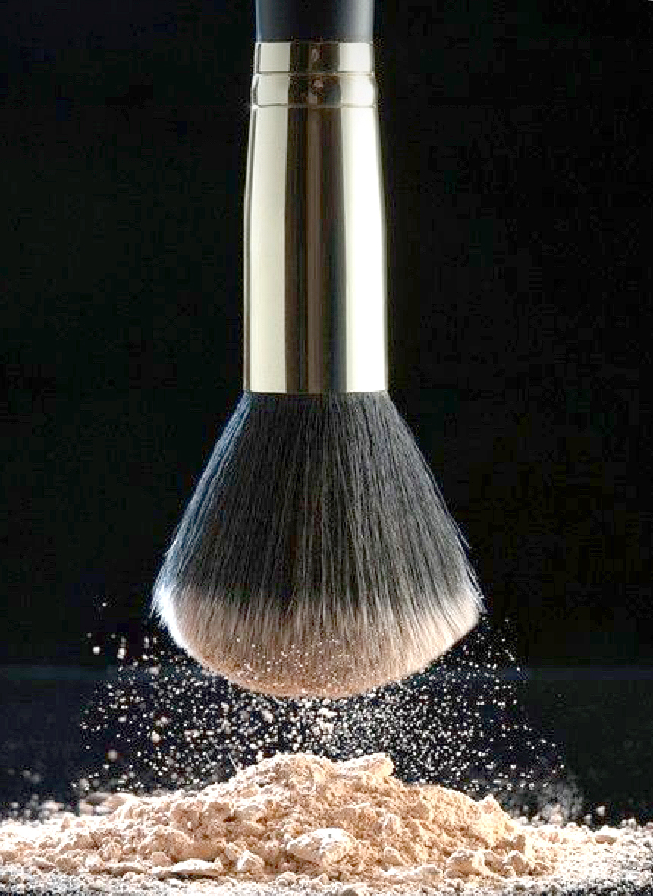
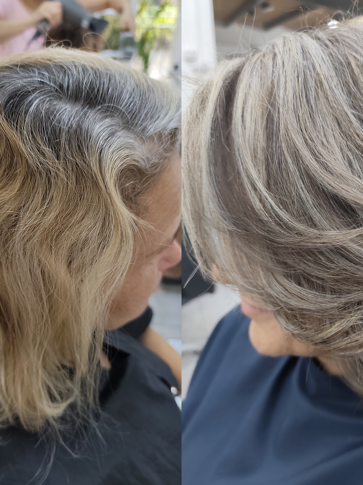
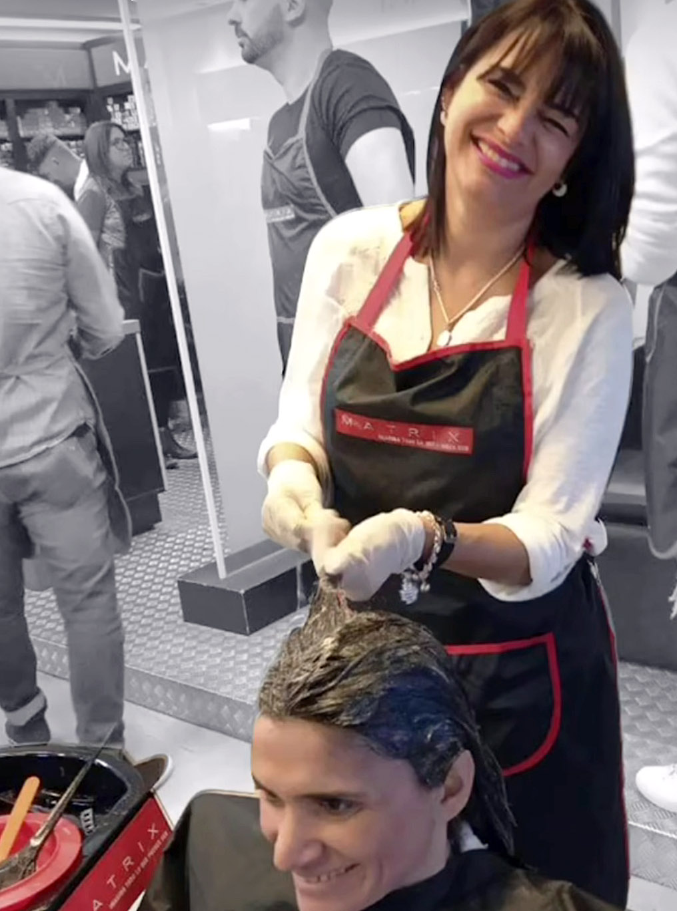

Especialidad
Corte & Colorimetría
Balayage, camuflaje de canas, coloración completa y técnicas de degradé. Diseñamos el color según tu cabello, no según una fórmula genérica.
Desde $150.000 balayage longitud media
Concepción del Uruguay · Entre Ríos · Argentina
Nuestros servicios
Corte, colorimetría, manicura, pedicura, cejas, pestañas y maquillaje. Sin turnos dispersos en distintos salones. Una sola tarde bien aprovechada.

Balayage, camuflaje de canas, coloración completa y técnicas de degradé. Diseñamos el color según tu cabello, no según una fórmula genérica.
Desde $150.000 balayage longitud media

Manicura y pedicura completa con kapping incluido — sin sorpresas en la factura. Una prestación de excelencia que otros salones cobran aparte.
$20.000 manicura completa con kapping

Tratamiento completo de pies. Porque el detalle importa de los pies a la cabeza.
Consultá precio según servicio

Maquillaje profesional con productos de primera línea. Para eventos, sesiones o cualquier ocasión en la que querés verte en tu mejor versión.
Consultá precio según servicio

Diseño de cejas, laminado, tinturas y pestañas. Un detalle que cambia toda la cara — y que hacemos con la misma dedicación que el resto.
Consultá precio según servicio

Combiná servicios en una sola visita. Lavado, corte, camuflaje de canas, manicura, pedicura. Una tarde para vos, sin apuros.
Reservá y armamos tu combinación ideal
Por qué elegirnos
No cobramos más porque sí. Cobramos lo justo por hacerlo bien, con los mejores productos del mercado y profesionales que se siguen capacitando. El resultado lo notás hoy y en tres meses.

"Fui clienta y hace 8 años no venía. Volví porque me contactaron para ofrecerme un tratamiento que va conmigo." — Clienta reactivada
Tres décadas transformando looks y construyendo confianza, una clienta a la vez.
Cómo funciona
Cuatro pasos simples para que llegues al salón sin dudas y te vayas exactamente como querías.
Online, en el momento que elijas. Sin llamar, sin esperar confirmación.
Te recibimos en un ambiente diseñado para que esa tarde sea solo tuya.
Antes de empezar, hablamos de lo que necesitás. Sin sorpresas en el medio.
Un resultado que se mantiene. En dos meses, notás la diferencia con otros salones.
"En el salón KP me cobraron un 15 o 20% más. Roté por otros 3 salones. No me duró nada, me arruinaron la cabeza… Volví."
"Fui clienta y hace 8 años no venía. Volví porque me contactaron para ofrecerme un tratamiento que va conmigo, en un día específico."
"Hace seis años que vengo cada dos o tres meses y me hago todo. Esa tarde sé que vengo a tratarme bien."
"Lo que me hacen acá me queda y se mantiene." — Lo que escuchamos siempreReservar mi turno
Productos
Los mismos productos elegidos para tratarte, están disponibles para que continúes el cuidado en casa. Consultá disponibilidad en el salón o por WhatsApp.
Colorimetría
Las mismas marcas que usamos en el salón para resultados que duran.
Consultar disponibilidadCuidado capilar
Recuperación, brillo y nutrición para mantener el resultado entre visitas.
Consultar disponibilidadUñas
Esmaltes semipermanentes y productos de cuidado de uñas profesionales.
Consultar disponibilidadEl catálogo completo está disponible en el salón. Para consultas específicas, escribinos por WhatsApp.
Formación profesional
Salón Karina Petelín forma a los profesionales que después trabajan en los mejores salones de Entre Ríos. Los mismos técnicos y coloristas que atendés son los que enseñan.
Balayage, degradé, camuflaje de canas y técnicas de decoloración segura. Nivel inicial y avanzado.
Manicura profesional, kapping, semipermanente y uñas esculpidas. Formación práctica intensiva.
Diseño, laminado, tintura y extensiones. El servicio de mayor crecimiento en el sector.
Desde maquillaje social hasta técnicas para fotografía y eventos. Producto profesional incluido.
"Somos el salón que forma a otros profesionales en las mismas técnicas que aplicamos cada día." — Karina Petelín
¿Sos profesional del sector?
Accedé al Espacio Profesionales para ver el catálogo completo de cursos, materiales y contenidos exclusivos.

Historia
Karina Petelín comenzó su trayectoria hace tres décadas en Concepción del Uruguay, Entre Ríos. Lo que empezó como un espacio de servicio se fue convirtiendo en referencia regional de colorimetría, técnicas capilares y formación profesional.
Hoy el salón combina atención personalizada, productos de primera línea y una escuela activa que forma a los profesionales de la provincia. La misma dedicación de siempre, con las técnicas de hoy.
Preguntas frecuentes
¿Tenés otra pregunta antes de reservar?
Escribinos por WhatsAppTu próximo turno
Treinta años cuidando cabellos y manos en Concepción del Uruguay. Reservá online en menos de 2 minutos y llegá a un salón que ya sabe lo que hace.
Reservar mi turno ahora✓ Sin tarjeta. Sin prepago. Solo tu turno confirmado.